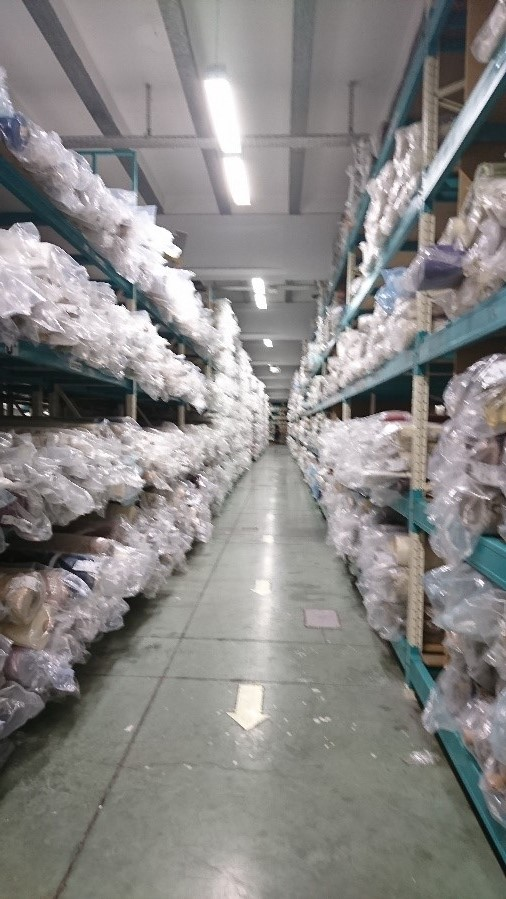
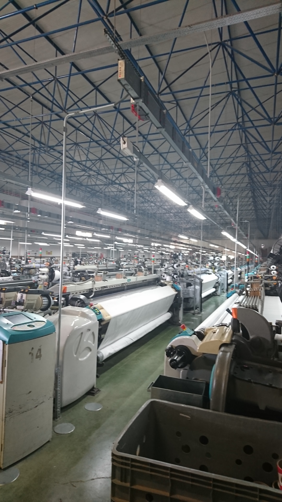
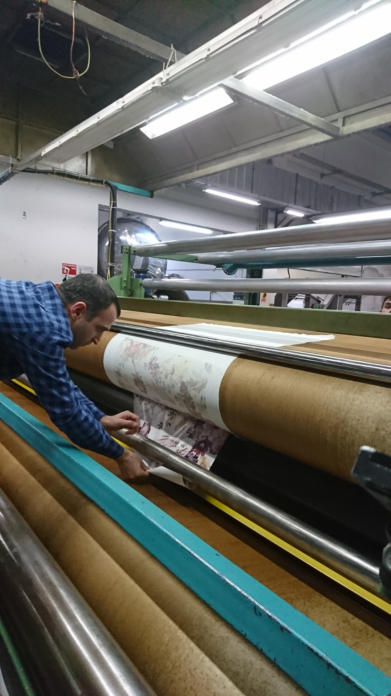
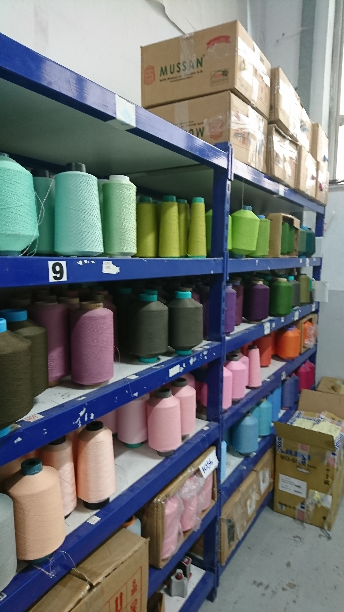

Салон Штор «ДЕВАРВИ» оказывает следующие виды услуг:
- текстильный дизайн интерьеров
- подбор и расчет необходимых материалов
- изготовление карнизов
- изготовление жалюзи
- пошив штор, покрывал, чехлов на мебель, постельного белья
- ремонт и переделка уже существующих текстильных изделий
- качественный пошив
- доставку, установку и навеску изготовленных карнизов, жалюзи, штор
- и ещё очень много всего
Наш Салон Штор работает уже более 15 лет. Колоссальный опыт в текстильном дизайне позволяет находить правильные решения для любых интерьеров.
Обычно работа начинается с постановки задачи. Далее дизайнер подбирает необходимые ткани, карнизы и т.д. прорисовывает эскиз от руки.
Если есть фото помещения, то на компьютере встраивает в интерьер.
Компьютерная модель.Готовое изделие.
Наша фирма напрямую сотрудничает с огромным числом фабрик по производству тканей. Поэтому цены у нас очень вменяемые.
Этот станок вшивает утяжелитель.Склад готовой продукции.

Фабрика по производству тканей.

Демонстрация как наносится печатный рисунок на ткань.

Далее заказываются необходимые ткани, карнизы, аксессуары. Это занимает от 1 до 3 дней.
Все это отправляется в цех по пошиву. Пошивочный цех оборудован современными профессиональными японскими машинками, закроечным столом, парогенераторами.
Запас ниток.

Наш цех.
Профессиональные швеи с колоссальным опытом работы приступают к изготовлению задуманного. Перед пошивом ткани обязательно пропариваются, чтобы в дальнейшем они не давали усадку и проверяются на брак. После пошива уже готовые изделия еще раз пропариваются, чтобы уменьшить объем работ при навеске.
В зависимости от сложности и объема данный этап также занимает от 1 до 3 дней.
После того как заказ отшит, его привозят в салон. Далее: Первый вариант - его забирает Заказчик или мы его доставляем на место. Второй – монтажник и дизайнер выезжают к Заказчику в заранее обговорённое время и делают всё под ключ. Заказчику остаётся только любоваться красотой.